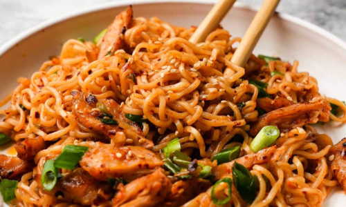

Garlic Asian Noodles
Easy peasy Asian noodle stir-fry using pantry ingredients that you already
have on hand. Quick, no-fuss, and made in less than 30 minutes!
Ingredients
- 8 oz spaghetti
- 12 oz medium shrimp, peeled and deveined
- 1 Tbsp olive oil
- 8 oz cremini mushrooms, sliced
- 1 red bell pepper, diced
- 2 zucchini, diced
- 1 carrot, grated
For the Sauce